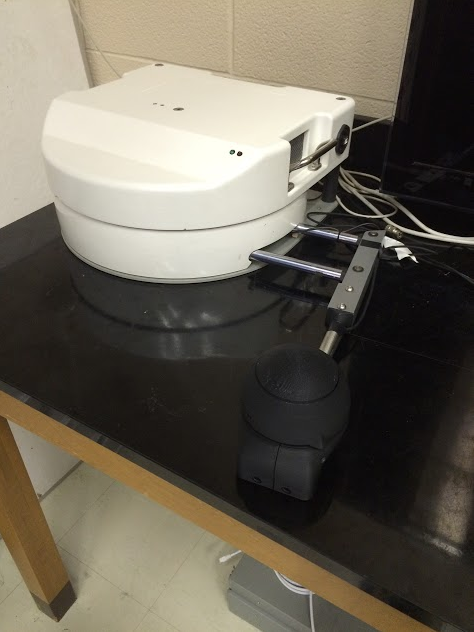

| At the culmination of my engineering degree at the University of Waterloo I worked alongside three other talented engineers and the guidance of Profess John McPhee to create a robotic assistance gamification platform for stroke rehabilitation. The project involved making improvements to a two-degree of freedom robot to be able to aid or resist user motion. Design a handle for the user that would be able to be used by stroke victims trying to regain strength in their arm, who may have no strength left in their hands. Design a gamified experience to engage the stroke rehabilitation patient to engage them in the rehabilitation process. I worked closely with the robot to increase data output and be able to command the armature to a specific location at a specific force. Increasing data output to users and hospitals was a main factor to show that this rehabilitation method was more useful than current methods. We worked closely with stakeholders to develop a solution to these problems and were selected to present our final product at University of Waterloo. |  | |